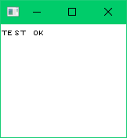

How to write a Game Boy emulator – Part 10: The timer
This post is part of a blog series about writing a Game Boy emulator.
AntonioND has written the best explanation I've seen for the timer in The Cycle-Accurate Game Boy Docs . I copied the diagram below from his docs.
Everything starts with the system clock. The system clock is a 16-bit counter that is incremented every clock cycle.
There are four memory locations associated with the timer:
| Address | Abbreviation | Name |
|---|---|---|
| 0xFF04 | DIV | Divider register |
| 0xFF05 | TIMA | Timer counter |
| 0xFF06 | TMA | Timer modulo |
| 0xFF07 | TAC | Timer control |
DIV always returns the highest 8 bits of the system clock. If DIV is written to, the system clock gets reset to 0.
TIMA is the timer counter. TAC controls how often TIMA gets incremented in relation to the system clock. When TIMA overflows, the timer interrupt gets requested, and TMA is copied into TIMA.
TMA is the timer modulo. When TIMA overflows, TMA is copied into TIMA.
TAC controls how often TIMA gets incremented in relation to the system clock. The highest 5 bits of TAC are always 1. Bits 0 and 1 (TAC.Freq) control the speed at which TIMA is incremented. Bit 2 (TAC.Enable) determines if TIMA gets incremented.
This is where the diagram comes in handy. TAC.Freq selects one of four bits in the system clock:
| TAC.Freq | Bit in the system clock |
|---|---|
| 0b00 | 9 |
| 0b01 | 3 |
| 0b10 | 5 |
| 0b11 | 7 |
The selected bit is ANDed with TAC.Enable. The resulting bit is fed into a falling edge detector. When the detector detects that the bit goes from 1 to 0 (the falling edge), it increments TIMA.
Test roms
There's a chicken-and-egg problem with the timer. You can't really test the timer without implementing instruction timing, and you can't really test instruction timing without the timer.
At this point, your emulator should pass this test rom:
| .gb file | https://gekkio.fi/files/mooneye-gb/latest/tests/acceptance/timer/div_write.gb |
|---|---|
| SHA-256 hash | 47f1b9e1ddff588aa44fd042a2f3ee2beec6e138f88dcb58009ee3e840d75035 |
| Source code | https://github.com/Gekkio/mooneye-gb/blob/8cebbc21b34e1347b608c9a5334362ebe1859150/tests/acceptance/timer/div_write.s |
| Expected output |  |
The code
I have chosen to keep my implementation of the timer simple for the moment. It does not try to implement all the obscure behaviors described in AntonioND's docs.
func (st *st) addCycles(cycles int) {
for i := 0; i < cycles; i++ {
st.timing.cycles++
// Update timer.
st.timing.systemClock++
TAC := st.readMem(0xFF07) // TAC: Timer control
TAC_Freq := TAC & 0x03
TAC_Enable := getBit(TAC, 2)
systemClockBit := getBit_u16(st.timing.systemClock, [4]uint{9, 3, 5, 7}[TAC_Freq])
timerBit := systemClockBit && TAC_Enable
if st.timing.delayedTimerBit && !timerBit { // Falling edge.
TIMA := st.readMem(0xFF05) // TIMA: Timer counter
TIMA++
if TIMA == 0x00 { // If the timer overflowed.
st.requestInterrupt(2) // Request timer interrupt.
TMA := st.readMem(0xFF06) // TMA: Timer modulo
TIMA = TMA
}
st.writeMem(0xFF05, TIMA)
}
st.timing.delayedTimerBit = timerBit
}
}